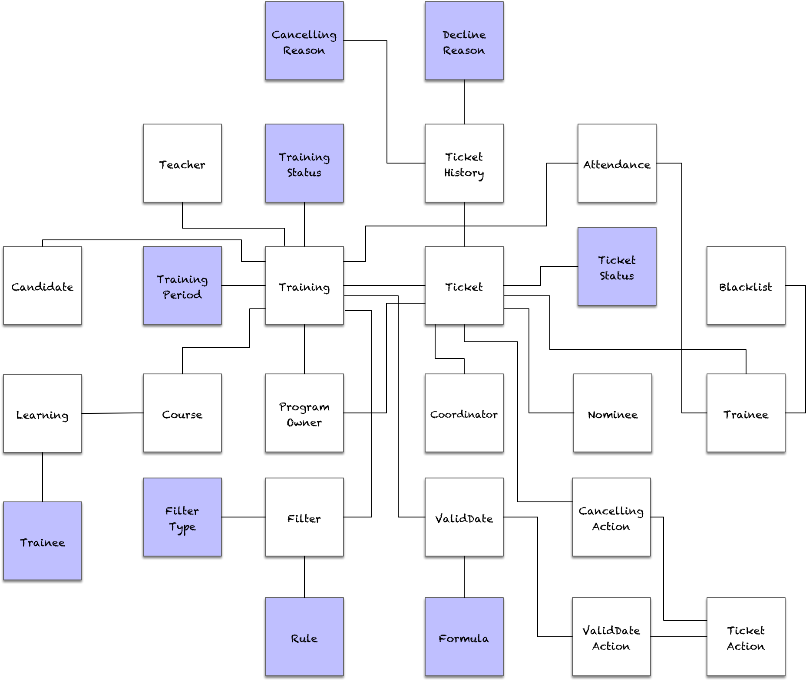
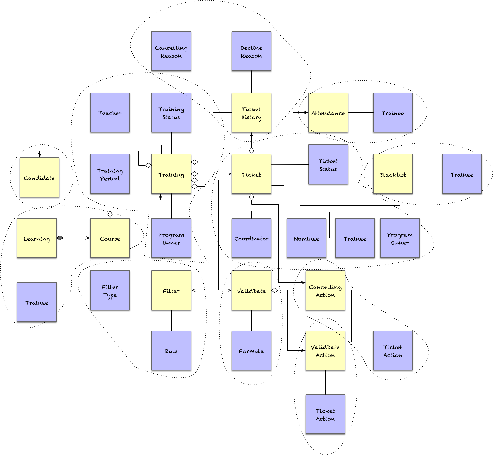

- 001 「战略篇」访谈 DDD 和微服务是什么关系？.md
- 002 「战略篇」开篇词：领域驱动设计，重焕青春的设计经典.md
- 003 领域驱动设计概览.md
- 004 深入分析软件的复杂度.md
- 005 控制软件复杂度的原则.md
- 006 领域驱动设计对软件复杂度的应对（上）.md
- 007 领域驱动设计对软件复杂度的应对（下）.md
- 008 软件开发团队的沟通与协作.md
- 009 运用领域场景分析提炼领域知识（上）.md
- 010 运用领域场景分析提炼领域知识（下）.md
- 011 建立统一语言.md
- 012 理解限界上下文.md
- 013 限界上下文的控制力（上）.md
- 014 限界上下文的控制力（下）.md
- 015 识别限界上下文（上）.md
- 016 识别限界上下文（下）.md
- 017 理解上下文映射.md
- 018 上下文映射的团队协作模式.md
- 019 上下文映射的通信集成模式.md
- 020 辨别限界上下文的协作关系（上）.md
- 021 辨别限界上下文的协作关系（下）.md
- 022 认识分层架构.md
- 023 分层架构的演化.md
- 024 领域驱动架构的演进.md
- 025 案例 层次的职责与协作关系（图文篇）.md
- 026 限界上下文与架构.md
- 027 限界上下文对架构的影响.md
- 028 领域驱动设计的代码模型.md
- 029 代码模型的架构决策.md
- 030 实践 先启阶段的需求分析.md
- 031 实践 先启阶段的领域场景分析（上）.md
- 032 实践 先启阶段的领域场景分析（下）.md
- 033 实践 识别限界上下文.md
- 034 实践 确定限界上下文的协作关系.md
- 035 实践 EAS 的整体架构.md
- 036 「战术篇」访谈：DDD 能帮开发团队提高设计水平吗？.md
- 037 「战术篇」开篇词：领域驱动设计的不确定性.md
- 038 什么是模型.md
- 039 数据分析模型.md
- 040 数据设计模型.md
- 041 数据模型与对象模型.md
- 042 数据实现模型.md
- 043 案例 培训管理系统.md
- 044 服务资源模型.md
- 045 服务行为模型.md
- 046 服务设计模型.md
- 047 领域模型驱动设计.md
- 048 领域实现模型.md
- 049 理解领域模型.md
- 050 领域模型与结构范式.md
- 051 领域模型与对象范式（上）.md
- 052 领域模型与对象范式（中）.md
- 053 领域模型与对象范式（下）.md
- 054 领域模型与函数范式.md
- 055 领域驱动分层架构与对象模型.md
- 056 统一语言与领域分析模型.md
- 057 精炼领域分析模型.md
- 058 彩色 UML 与彩色建模.md
- 059 四色建模法.md
- 060 案例 订单核心流程的四色建模.md
- 061 事件风暴与业务全景探索.md
- 062 事件风暴与领域分析建模.md
- 063 案例 订单核心流程的事件风暴.md
- 064 表达领域设计模型.md
- 065 实体.md
- 066 值对象.md
- 067 对象图与聚合.md
- 068 聚合设计原则.md
- 069 聚合之间的关系.md
- 070 聚合的设计过程.md
- 071 案例 培训领域模型的聚合设计.md
- 072 领域模型对象的生命周期-工厂.md
- 073 领域模型对象的生命周期-资源库.md
- 074 领域服务.md
- 075 案例 领域设计模型的价值.md
- 076 应用服务.md
- 077 场景的设计驱动力.md
- 078 案例 薪资管理系统的场景驱动设计.md
- 079 场景驱动设计与 DCI 模式.md
- 080 领域事件.md
- 081 发布者—订阅者模式.md
- 082 事件溯源模式.md
- 083 测试优先的领域实现建模.md
- 084 深入理解简单设计.md
- 085 案例 薪资管理系统的测试驱动开发（上）.md
- 086 案例 薪资管理系统的测试驱动开发（下）.md
- 087 对象关系映射（上）.md
- 088 对象关系映射（下）.md
- 089 领域模型与数据模型.md
- 090 领域驱动设计对持久化的影响.md
- 091 领域驱动设计体系.md
- 092 子领域与限界上下文.md
- 093 限界上下文的边界与协作.md
- 094 限界上下文之间的分布式通信.md
- 095 命令查询职责分离.md
- 096 分布式柔性事务.md
- 097 设计概念的统一语言.md
- 098 模型对象.md
- 099 领域驱动设计参考过程模型.md
- 100 领域驱动设计的精髓.md
- 101 实践 员工上下文的领域建模.md
- 102 实践 考勤上下文的领域建模.md
- 103 实践 项目上下文的领域建模.md
- 104 实践 培训上下文的业务需求.md
- 105 实践 培训上下文的领域分析建模.md
- 106 实践 培训上下文的领域设计建模.md
- 107 实践 培训上下文的领域实现建模.md
- 108 实践 EAS 系统的代码模型.md
- 109 后记：如何学习领域驱动设计.md
106 实践 培训上下文的领域设计建模
领域设计建模牵涉到两个重要的设计阶段：识别聚合、场景驱动设计。聚合维护了领域模型的概念边界，从而约束和限制模型对象之间的关系。引入聚合也更加有利于我们确定领域模型的角色构造型。同时，事件风暴识别出来的决策命令，可以作为领域场景的候选；然后再根据业务价值确定领域场景的粒度，并为领域场景编写用户故事。用户故事可以帮助设计者分解任务，以聚合为核心的角色构造型可以帮助设计者分配职责，这就为场景驱动设计扫清了设计障碍。
下面，我们遵循这一思路对培训上下文开展领域设计建模。
识别聚合
在拥有领域分析模型的基础上识别聚合，仍可采用庖丁解牛的过程对模型进行细化。
梳理对象图
首先确定领域模型对象到底是实体还是值对象，并分别用黄色与蓝色表示。一些较容易识别的值对象可以最先标记出来。这些值对象往往体现了单位、枚举、类型的内聚概念等，如下图所示：

一些容易识别的实体类也可以提前标记出来。这些实体类往往是领域场景中扮演主要作用的领域概念，并体现了非常清晰的生命周期特征：
ProgramOwner、Coordinator、Nominee 与 Trainee 都是参与培训上下文的角色，它们都拥有员工上下文的员工 ID，如此即可建立这些角色与 Training 和 Ticket 等实体类之间的关联。它们对应的角色（Role），来自认证上下文，用于安全认证和权限控制。角色具有的基本信息如姓名、电子邮件等，又来自员工上下文。因此，这些领域模型类虽然定义了 ID，但在培训上下文中，这些 ID 不过作为其主实体的一个属性值而已，并不需要管理它们的生命周期，因而可以定义为值对象。由于培训上下文并未要求为培训维护一个单独的教师信息，故而与 Training 相关的 Teacher 应定义为值对象。
Filter 与 ValidDate 与 Training 关联。它们看似具有值对象的特征，除了区分 TrainingId 的值外，相同类型与规则的过滤器应视为同一个 Filter 对象；同理，相同公式与有效日期和时间，也应视为同一个 ValidDate 对象。但由于它们的生命周期需要被单独管理，且对于培训而言，判断是否为相同的过滤器与有效日期，仍然基于 ID 进行判断，因此将它们定义为实体更加适合。同理，ValidDateAction、CancellingAction 与 AssignmentAction 也应定义为实体，而 TicketAction 的差异在于具体的活动内容，应定义为值对象。于是，获得如下领域模型：

在确定了值对象与实体后，可以简化对领域模型对象关系的确认，即只需梳理实体之间的关系。一个 Course 聚合了多个 Training，一个 Training 聚合了多个 Ticket，这三者之间的组合关系非常清晰。一个 Training 可以配置多个 Filter 与 ValidDate，但并非必须有的关系，故而定义为聚合关系。同理，一个 ValidDate 聚合多个 ValidDateAction，一个 Ticket 聚合多个 CancellingAction、多个 TicketHistory，一个 Training 聚合了多个 Candidate 和多个 Attendance，而 BlackList 则是完全独立的：

分解关系薄弱处
梳理之后的领域分析模型对象图非常规范，除了合成关系，存在聚合关系的实体都分到不同的聚合中，更不用说完全独立的 Backlist 实体。如果多个聚合边界的实体依赖了相同的值对象，可以定义多个相同的值对象，然后放到各自的聚合边界内。分解关系薄弱处得到的领域设计模型如下所示：

调整聚合边界
Learning 聚合中的 Course 实体需要被独立管理，因此为其划定单独的聚合边界。除此之外，其余聚合边界都是合理的，不需再做调整。最终，确定了聚合边界的领域设计模型为：

由此得到的聚合包括：
- Training 聚合
- Course 聚合
- Learning 聚合
- Ticket 聚合
- TicketHistory 聚合
- Filter 聚合
- ValidDate 聚合
- ValidDateAction 聚合
- CancellingAction 聚合
- Candidate 聚合
- Attendance 聚合
- Blacklist 聚合
即使在领域设计模型中，我们也无需为领域模型对象定义字段。每个聚合内的实体或值对象到底需要定义哪些字段，可以结合领域场景，通过测试驱动开发逐步驱动出来。领域设计模型最重要的要素是确定聚合。一旦确定了聚合，实际上也就确定了管理聚合生命周期的资源库。至于需要哪些领域服务，可以交由场景驱动设计来识别。
场景驱动设计
识别领域场景
根据我在 3-14《场景的设计驱动力》对领域场景的定义：“具有业务价值的，由参与者触发的，按照时序排列的一系列连续执行的任务过程。”在事件风暴中，一个决策命令要么由参与者触发，这个参与者包括角色或者策略，外部系统触发的决策命令由于不在当前系统的边界，可以不用考虑；要么由前置事件触发，此时的两个决策命令代表了连续执行的按照时序排列的任务过程。如此看来，决策命令的特征与领域场景的特征有相似之处，可以帮助我们识别领域场景。
例如，培训上下文中培训事件流如下所示：

“Start Training”、“Check In”和“Finish Training”这三个决策命令都有各自的参与者，而“Close Ticket”与“Learn Course”决策命令则是由 TraineeAttended 领域事件触发的，它们与“Check In”决策命令是连续执行的过程。
在圈定满足条件的决策命令后，可站在参与者的角度思考它们究竟体现了什么样的业务价值，由此确定领域场景的边界。所谓“业务价值”，就是明确领域场景 6W 模型的 Why，从用户角度去思考该领域行为能为用户带来什么样的价值。这体现了领域驱动设计的核心思想，即抛开技术对模型的影响，以符合领域逻辑的统一语言形式而非以“技术动词 + 领域概念名词”的形式命名领域场景。例如，“新增员工”就是技术动词 + 领域概念名词的命名形式，它并没有体现人事专员执行该操作的业务价值。想一想，人事专员为什么需要新增员工呢？显然，他的目的是为了办理员工入职，故而“办理员工入职”的描述更符合领域场景的特征，体现了业务价值。
业务价值还体现了完整性的特征，即缺少了某一个功能就无法满足用户的诉求。《有效需求分析》的作者徐锋将这种完整性称之为是可以暂停的场景。他在书中举例说明：
例如，你不会在搜索引擎上输入一个关键词就离开，即使离开，也肯定是临时有事，因此输入关键词就不是一个完整的使用场景。
输入关键词是不可暂停的，因为你需要在输入关键词后即刻执行搜索操作，获得你想要的搜索结果。只有在获得了搜索结果，这个业务场景才是完整的，可以暂停的。在培训事件流中，学员在执行了“Check In”决策命令后，隐含着需要顺序执行“Close Ticket”和“Learn Course”，即将培训票的状态更新为 Closed 状态，并添加学员的学习记录，这个业务场景才可认为执行完毕，在执行“Chick In”决策命令时是不可暂停的。因此，该场景提供的业务价值为学员签到，包含了 Check In、Close Ticket 和 Learn Course 等决策命令。
以培训上下文的主要事件流为例，可以获得如下领域场景：

这些领域场景其实也可认为是针对每个参与者的一个用例（Use Case）或用户故事（User Story）。用例或用户故事表达的任务执行流程可以帮助我们更好地进行任务分解。例如，针对“提名候选人”领域场景，编写的用户故事如下所示：
用户故事：提名候选人
As 一名协调者
I want to 提名候选人参加培训
So that 部门的员工得到技能培训的机会
场景1：候选人获得提名
Given：从候选人名单中选择要提名的候选人
And： 选择要提名的培训票
When： 提名候选人
Then： 培训票被设置为WaitForConfirm状态
And： 该培训票不可再被提名
And： 候选人将收到培训提名的邮件通知
And： 生成票的历史记录
场景2：候选人参加过该课程
Given：从候选人名单中选择要提名的候选人
And： 该候选人已经参加过该培训要学习的课程
And： 选择要提名的培训票
When： 提名候选人
Then： 提示该候选人已经参加过该课程
And： 提名失败
And： 培训票仍然处于Available状态
“培训签到”领域场景的用户故事则为：
用户故事：培训签到
As 一名培训学员
I want to 签到
So that 记录我已正常出勤
场景1：学员签到
Given：拥有Confirmed状态的培训票的学员
And： 培训已经开始
When： 签到
Then： 记录学员的出勤信息
And： 培训票被设置为Closed状态
And： 记录学员的学习信息
And： 生成票的历史记录
分解任务
确定领域场景更多体现的是用户的业务价值，到了分解任务阶段，就需要考虑领域场景的功能分解与任务拆分了。在分解任务时，要注意把握组合任务与原子任务的粒度。通常而言，对外部资源的访问往往可以分解为一个原子任务，除此之外，就是指一个聚合自身可以履行的职责。换言之，只要一个聚合能够完成该任务，就可以不再继续细分，明确其为原子任务。聚合来自于前面获得的领域设计模型。当然，在分解任务过程中，也可能发现之前未曾识别出来的聚合。
“提名候选人”领域场景分解的任务为：
- 提名候选人（领域场景）
- 确定候选人是否已经参加过该课程
- 获取该培训对应的课程
- 确定课程学习记录是否有该候选人
- 如果未参加，则提名候选人
- 获得培训票
- 提名
- 保存票的状态
- 发送提名通知
- 获取通知邮件模板
- 组装提名通知内容
- 发送通知
- 确定候选人是否已经参加过该课程
“培训签到”领域场景分解的任务为：
- 培训签到（领域场景）
- 签到
- 获得培训票
- 签到
- 保存票的状态
- 生成出勤记录
- 生成学习记录
- 获取该培训对应的课程
- 保存学习记录
- 签到
分配职责
在获得了领域场景分解的任务后，根据场景驱动设计过程，就应该将分解出来的组合任务与原子任务分别分配给对应的角色构造型，而领域场景自身则分配给应用服务。
“提名候选人”领域场景的时序图如下图所示：

从时序图可以看出，NominationAppService 应用服务承担了多个领域服务之间的协作职责，且需要根据 beAttend() 方法的返回结果决定提名的执行流程，这实际上属于领域逻辑的一部分。故而应该在 NominationAppService 应用服务内部引入一个领域服务来封装这些业务逻辑，修改如下：

时序图中的 MailTemplate 是一个聚合，存储了不同类型操作需要通知的邮件模板。在前面的领域分析建模与领域设计建模时，未能发现该聚合。这也印证了领域建模很难一蹴而就，需要不断地迭代更新和演进。
结合任务分解与角色构造型，该领域场景的时序图脚本如下：
NominationAppService.nominate(nominationRequest) {
NominationService.nominate(ticketId, candidate) {
LearningService.beLearned(candidateId, trainingId) {
TrainingRepository.trainingOf(trainingId);
LearningRepository.isExist(candidateId, courseId);
}
TicketService.nominate(ticketId, candidate) {
TicketRepository.ticketOf(ticketId);
Ticket.nominate(candidate);
TicketRepository.update(ticket);
}
NotificationService.notifyNominee(ticket, nominee) {
MailTemplateRepository.templateOf(templateType);
MailTemplate.compose(ticket, nominee);
NotificationClient.notify(notificationRequest);
}
}
}
“培训签到”领域场景的时序图如下图所示：

各个角色构造型相互协作的时序图脚本如下：
TrainingAppService.checkIn(checkInRequest) {
CheckInService.checkIn(traineeId, trainingId) {
TicketRepository.ticketOf(traineeId, trainingId, ticketStatus);
Ticket.checkIn();
TicketRepository.update(ticket);
AttendanceRepository.add(attendance);
LearningService.append(trainee, trainingId) {
CourseRepository.courseOf(trainingId);
LearningRepository.add(learning);
}
}
}